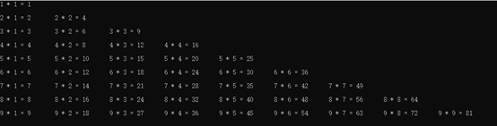

我们在使用C#编程的时候，经常使用反射来动态调用方法，但有时候需要动态的生成方法，下面介绍使用表达式树的方式来自动生成方法，并调用。
首先需要说明什么是表达式，熟悉Linq的程序猿都用过类似于下面的代码：t=>t.Length<=25;
在C#中=>代表这是一个Lambda表达式，它用来对数组进行查询，统计，排序，去重的功能非常有用。而表达式树就是通过动态的创建一个Lambda的方式来实现相关的功能。
下面是一个类似于JS中apply函数的示例。
使用表达式树，一定要引用System.Linq.Expressions;其中的Expression类有很多的方法可以定义一个方法所需要的所有东西。
public class CommonTest
{
public object TestMethodCall(int age, string name)
{
Console.WriteLine($"{name}'s Age is {age}");
return true;
}
public object TestExpression(MethodInfo method, object[] parameters, CommonTest instance)
{
//最终生成的表达式样式(m,p)=>{return (object)m.method(p);}
//定义两个参数表达式
ParameterExpression mParameter = Expression.Parameter(typeof(CommonTest), "m");//定义一个名称为m的参数
ParameterExpression pParameter = Expression.Parameter(typeof(object[]), "p");//定义一个名称为p的参数
ParameterInfo[] tParameter = method.GetParameters();//获取到方法的所有参数
Expression[] rParameter = new Expression[tParameter.Length];//定义一个与方法参数长度相同的表达式容器,因为在调用方法的时候需要使用的是表达式,不是直接使用方法的参数列表
for (int i = 0; i < rParameter.Length; i++)
{
BinaryExpression pExpression = Expression.ArrayIndex(pParameter, Expression.Constant(i));//从方法中获取到对应索引的参数
UnaryExpression uExpression = Expression.Convert(pExpression, tParameter[i].ParameterType);//将此参数的类型转化成实际参数的类型
rParameter[i] = uExpression;//将对应的参数表达式添加到参数表达式容器中
}
MethodCallExpression mcExpression = Expression.Call(mParameter,method, rParameter);//调用方法,因为是实例方法所以第一个参数必须是m,如果是静态方法,那么第一个参数就应该是null
UnaryExpression reExpression = Expression.Convert(mcExpression, typeof(object));//将结果转换成object,因为要动态的调用所有的方法,所以返回值必须是object,如果是无返回值的方法,则不需要这一步
return Expression.Lambda<Func<CommonTest, object[], object>>(reExpression, mParameter, pParameter).Compile()(instance, parameters);//将方法编译成一个Func委托,并执行他
}
}
以上的代码的调用方式如下：
CommonTest ct = new CommonTest();
MethodInfo mi = typeof(CommonTest).GetMethod("TestMethodCall");
var r = ct.TestExpression(mi, new object[] { 25, "SC" }, ct);
此方法也是C#MVC中调用控制器中的Action的原理代码，其最大的作用是不管目标Action拥有多少个参数，最后调用都只需要一个object[]的参数，避免了直接使用反射调用，但是不确定参数个数的困难。
使用Expression不仅可以实习以上的类似于MVC原理的代码，也可以对表达式树进行解析，可以实现ORM底层的Sql构成，但此出不再进行详解，有兴趣可以百度查询表达式树的解析。
表达式树实现的缺点是功能实现复杂，调试困难，建议在实现之前先将需要实现的功能使用C#语法编写出来，再按照对应的格式通过表达式树来实现，这样相对简单一些。
下面是使用表达式输出一个99乘法表。
以下是实现的结果

首先是通过正常的方式来实现，代码如下：
for (int i = 1; i <= 9; i++)
{
for (int j = 1; j <= i; j++)
{
int total = i * j;
Console.Write($"{i} * {j} = {total}\t");
}
Console.WriteLine();
}
Console.ReadKey();
下面是使用表达式树实现相同功能的代码：
/// <summary>
/// 使用表达式树实现99乘法表
/// </summary>
public void TestMultiple()
{
LabelTarget labOut = Expression.Label();//用于跳出外部循环的标志
LabelTarget labIn = Expression.Label();//用于跳出内部循环的标志
ParameterExpression iParameter = Expression.Parameter(typeof(int), "i");//定义外部循环的变量,类似于int i;
ParameterExpression jParameter = Expression.Parameter(typeof(int), "j");//定义内部循环的变量,类似于int j;
ParameterExpression rParameter = Expression.Parameter(typeof(int), "result");//定义用于保存i*j的结果的变量
MethodInfo writeString = typeof(Console).GetMethod("Write", BindingFlags.Static | BindingFlags.Public, null, new Type[] { typeof(string) }, null);//获取Write方法
MethodInfo writeInt = typeof(Console).GetMethod("Write", BindingFlags.Static | BindingFlags.Public, null, new Type[] { typeof(int) }, null);//获取Write方法
Expression expResult = Expression.Block(
new[] { iParameter, jParameter, rParameter },
Expression.Assign(iParameter, Expression.Constant(1)),//为i赋初始值,类似于i=1;
Expression.Loop(Expression.Block(//此处开始外部循环,表达式只能实现while循环,不能实现for循环
Expression.IfThenElse(Expression.LessThanOrEqual(iParameter, Expression.Constant(9)),//定义执行的条件,类似于if(i<=9){
//外部if为真的时候执行以下代码
Expression.Block(
Expression.Assign(jParameter, Expression.Constant(1)),//为j赋初始值,类似于j=1;
Expression.Loop(Expression.Block(//此处开始内部循环
Expression.IfThenElse(Expression.LessThanOrEqual(jParameter, iParameter),//定义执行的条件,类似于if(j<=i){
//内部if为真的时候执行以下代码
Expression.Block(
Expression.Assign(rParameter, Expression.Multiply(iParameter, jParameter)),//此处用于计算i*j的结果,并进行赋值,类似于result=i*j
//打印出结果,类似于Console.Write("i * j = " + result + "\t")
Expression.Call(null, writeInt, jParameter),
Expression.Call(null, writeString, Expression.Constant(" * ")),
Expression.Call(null, writeInt, iParameter),
Expression.Call(null, writeString, Expression.Constant(" = ")),
Expression.Call(null, writeInt, rParameter),
Expression.Call(null, writeString, Expression.Constant("\t")),
Expression.PostIncrementAssign(jParameter)//j自增长,类似于j++
),
//内部if为假的时候执行以下代码
Expression.Break(labIn))//此处跳出内部循环)
), labIn),
Expression.Block(
Expression.Call(null, writeString, Expression.Constant("\n")),//此处打印换行符,类似于Console.WriteLine();
Expression.PostIncrementAssign(iParameter))//i自增长,类似于i++
)
//外部if为假的时候执行以下代码
, Expression.Break(labOut))//此处跳出外部循环
), labOut));
Expression.Lambda<Action>(expResult).Compile()();
}
以上两段代码实现的效果相同,可以看出表达式树实现相同的功能的复杂程度远远超出普通的方式，正常10行的代码，表达式树整整用了42行代码才实现。